← Part A: Exploring the Power of Flow Models | Part B: Flow Matching from Scratch (this page)
Overview
Part A used a large pretrained flow model. Here I train small flow models myself, from scratch, on MNIST. Both parts share a UNet backbone; Part 1 trains it as a single-step Gaussian denoiser, and Part 2 turns it into a proper flow-matching model that can generate digits from pure noise, first unconditionally conditioned only on time, then conditioned on the digit class with classifier-free guidance.
Part 1.1: The UNet
A standard encoder/decoder UNet with skip connections: two downsampling blocks, a flatten/unflatten bottleneck, two upsampling blocks, each upsampling step concatenated with its matching skip connection.

Built out of a handful of standard tensor ops (plain convs, strided convs for
downsampling, transposed convs for upsampling, and a flatten/unflatten pair at the
bottleneck), composed into ConvBlock/DownBlock/UpBlock.

class UnconditionalUNet(nn.Module):
def __init__(self, in_channels, num_hiddens):
super().__init__()
D = num_hiddens
self.conv0 = ConvBlock(in_channels, D)
self.down0 = DownBlock(D, D)
self.down1 = DownBlock(D, 2 * D)
self.flatten0 = Flatten()
self.unflatten0 = Unflatten(2 * D)
self.up0 = UpBlock(4 * D, D)
self.up1 = UpBlock(2 * D, D)
self.conv1 = ConvBlock(2 * D, D)
self.conv2d = nn.Conv2d(D, in_channels, 3, 1, 1)
def forward(self, x):
x0 = self.conv0(x)
x1 = self.down0(x0)
x2 = self.down1(x1)
b = self.unflatten0(self.flatten0(x2))
u1 = self.up0(torch.cat([x2, b], dim=1))
u2 = self.up1(torch.cat([x1, u1], dim=1))
u3 = torch.cat([u2, x0], dim=1)
return self.conv2d(self.conv1(u3))
Each Conv/DownConv/UpConv block is a single
convolution (or transposed convolution for upsampling) followed by BatchNorm and GELU;
Flatten/Unflatten collapse the 7×7 bottleneck down to a
single spatial point and back, with hidden width D=128.
Part 1.2: Training a Single-Step Denoiser
Train the UNet to map a noisy digit z = x + σε straight back to
the clean digit x, at a fixed noise level σ=0.5.
| Hyperparameter | Value |
|---|---|
| Batch size | 256 |
| Optimizer | Adam, lr = 1e-4 |
| Hidden dim D | 128 |
| Epochs | 5 |
| Noise level σ | 0.5 |
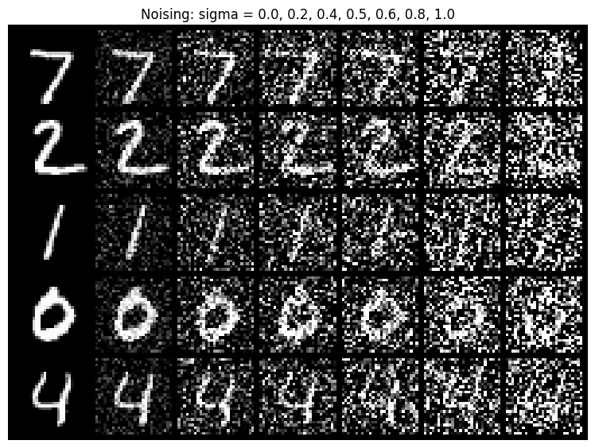
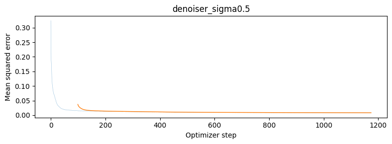
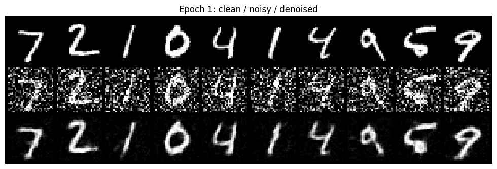
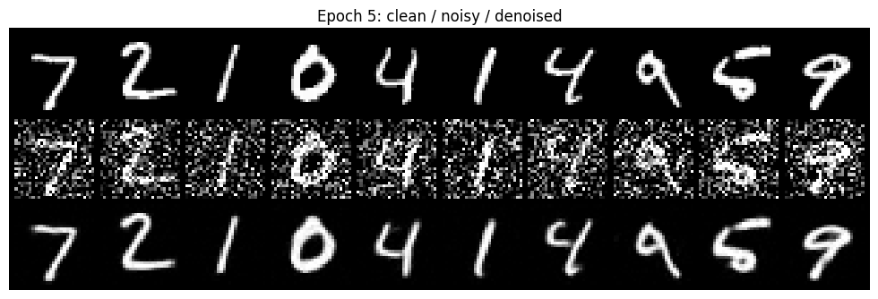
By epoch 5 the strokes are noticeably cleaner and straighter than epoch 1, especially on the digits that still looked wobbly early on (the 4 and the 9).
Out-of-Distribution Testing
The same σ=0.5 denoiser applied to noise levels it never trained on, σ ∈ {0.0, 0.2, 0.4, 0.5, 0.6, 0.8, 1.0}.
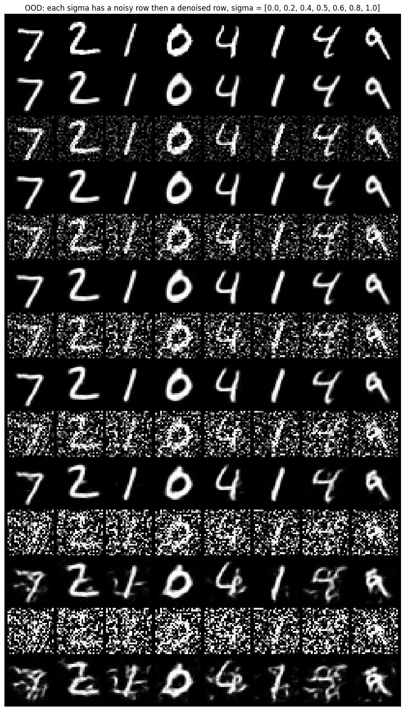
It generalizes gracefully below σ=0.5 (barely any denoising needed) and holds up reasonably even above it, up to σ≈0.8, past which strokes start thinning out and digits occasionally drift toward the wrong class entirely.
Denoising Pure Noise
Same architecture and training recipe, but now the input is pure Gaussian noise
z = ε with no digit signal in it at all, forcing the network to predict
a clean digit from nothing.
pn = UnconditionalUNet(1, hidden_dim).to(device)
opt = torch.optim.Adam(pn.parameters(), lr=learning_rate)
for epoch in range(num_epochs):
for images, _ in train_loader:
images = images.to(device)
loss = criterion(pn(torch.randn_like(images)), images)
opt.zero_grad(); loss.backward(); opt.step()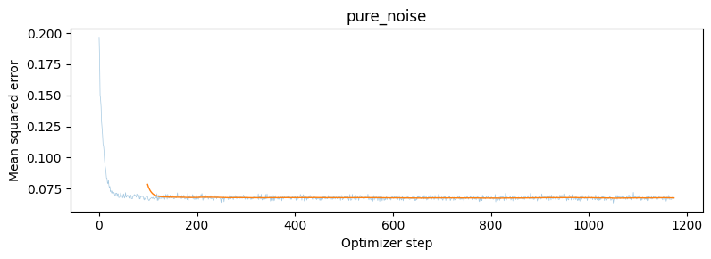
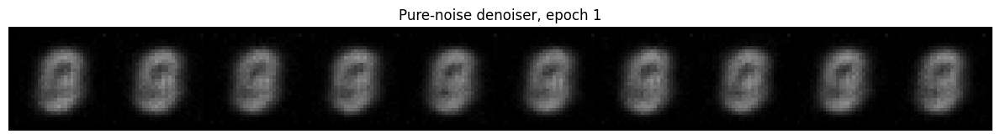
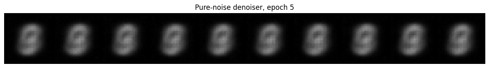
Every output is the same blurry, ambiguous blob, identical across all 10 held-out noise draws, and barely changes between epoch 1 and epoch 5. This is exactly what MSE loss predicts when the input carries zero information about which digit to produce: with no signal to condition on, the loss-minimizing strategy is to output the pixel-wise average of all training digits (roughly a 6/8/0-shaped smear, since those classes share the most overlapping ink), rather than committing to any single class. The network isn't failing, it's doing exactly what minimizing MSE under total uncertainty predicts.
Part 2.1: Time-Conditioned UNet
To train a true flow-matching model, the network needs to know how far along the
noise-to-data path it's looking at. I inject the (normalized) time t through
two small FC blocks that modulate the bottleneck and the first decoder block, multiplicatively.

t passed through an FCBlock and multiplied into the bottleneck and first decoder block (assignment page).
class FCBlock(nn.Module):
def __init__(self, in_channels, out_channels):
super().__init__()
self.net = nn.Sequential(
nn.Linear(in_channels, out_channels), nn.GELU(),
nn.Linear(out_channels, out_channels))
def forward(self, x):
return self.net(x)
class TimeConditionalUNet(nn.Module):
def __init__(self, in_channels, num_classes, num_hiddens):
super().__init__()
D = num_hiddens
# ... same conv/down/up/flatten blocks as UnconditionalUNet ...
self.fc1_t = FCBlock(1, 2 * D)
self.fc2_t = FCBlock(1, D)
def forward(self, x, t):
x0 = self.conv0(x); x1 = self.down0(x0); x2 = self.down1(x1)
t1 = self.fc1_t(t[:, None])[:, :, None, None]
t2 = self.fc2_t(t[:, None])[:, :, None, None]
b = self.unflat0(self.flat0(x2)) * t1
u1 = self.up0(torch.cat([b, x2], dim=1)) * t2
u2 = self.up1(torch.cat([u1, x1], dim=1))
return self.out(self.conv1(torch.cat([u2, x0], dim=1)))Part 2.2–2.3: Training & Sampling (Time-Conditioned)
Flow-matching loss: sample t, build x_t = (1-t)x_0 + t·x_1
from random noise x_0 and a real digit x_1, and regress the UNet's
output against the target flow x_1 - x_0. Sampling then integrates that
learned flow with Euler steps from pure noise at t=0 to t=1.
def time_fm_forward(unet, x_1, num_ts):
x_0 = torch.randn_like(x_1)
t = torch.rand(x_1.shape[0], device=x_1.device)
t_ = t[:, None, None, None]
x_t = (1 - t_) * x_0 + t_ * x_1
return F.mse_loss(unet(x_t, t), x_1 - x_0)
@torch.inference_mode()
def time_fm_sample(unet, img_wh, num_ts, seed=0):
x = torch.randn(40, 1, *img_wh, generator=torch.Generator(device=device).manual_seed(seed), device=device)
for i in range(num_ts):
t = torch.full((40,), i / num_ts, device=device)
x = x + (1 / num_ts) * unet(x, t)
return x| Hyperparameter | Value |
|---|---|
| Batch size | 64 |
| Optimizer | Adam, lr = 1e-2, ExponentialLR γ=0.11/10 |
| Hidden dim D | 64 |
| Epochs | 10 |
| Sampling steps | 50 (Euler) |
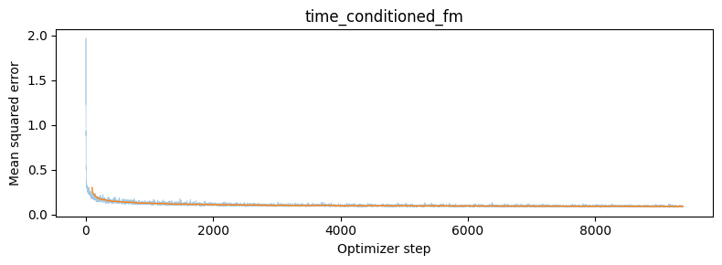
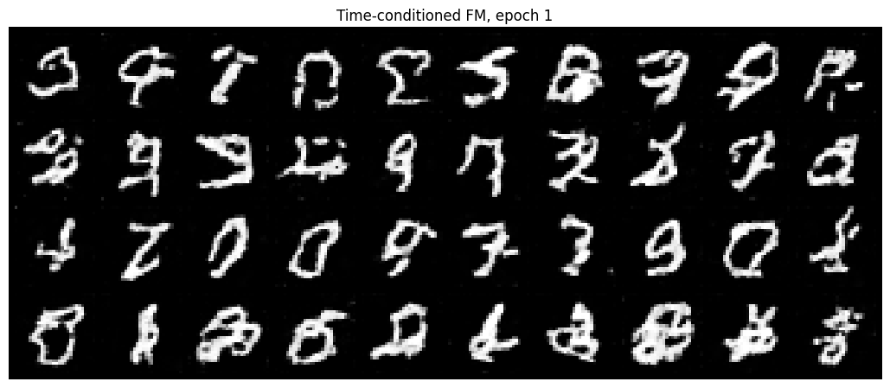
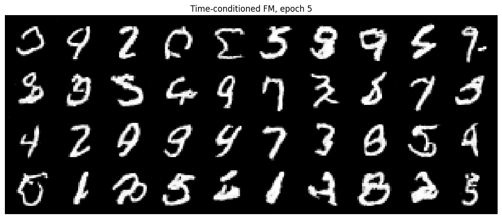
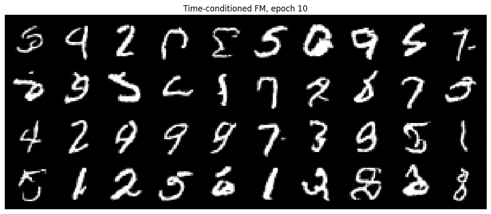
With no class conditioning, the model generates whatever digit it wants at every one of the 40 grid positions, there's no column-wise structure. At epoch 1 the strokes are shaky and a few samples are ambiguous between two digits; by epoch 10 nearly every sample is a clean, unambiguous digit, though the class distribution is whatever the model feels like producing, not something I can control.
Part 2.4: Class-Conditioned UNet
Same architecture and diagram as the time-conditioned UNet above, just with a second
FCBlock branch running in parallel to the time branch. Add a second pair of
FC blocks that take a one-hot class vector, with 10% of training
examples having their class vector zeroed out (unconditional dropout), so the same network
can later serve as both the conditional and unconditional branch for classifier-free
guidance.
c = F.one_hot(c, self.num_classes).float()
if mask is not None:
c = c * mask[:, None]
t1, c1 = self.fc1_t(t), self.fc1_c(c)
t2, c2 = self.fc2_t(t), self.fc2_c(c)
b = c1 * self.unflat0(self.flat0(x2)) + t1
u1 = c2 * self.up0(torch.cat([b, x2], dim=1)) + t2Part 2.5–2.6: Training & CFG Sampling (Class-Conditioned)
Classifier-free guidance at sampling time: evaluate the UNet once with the real class and once with the class masked out, then extrapolate past the conditional prediction.
def class_fm_forward(unet, x_1, c, p_uncond, num_ts):
x_0 = torch.randn_like(x_1)
t = torch.rand(x_1.shape[0], device=x_1.device)
t_ = t[:, None, None, None]
x_t = (1 - t_) * x_0 + t_ * x_1
mask = (torch.rand(x_1.shape[0], device=x_1.device) > p_uncond).float()
return F.mse_loss(unet(x_t, c, t, mask), x_1 - x_0)
@torch.inference_mode()
def class_fm_sample(unet, c, img_wh, num_ts, guidance_scale=5.0, seed=0):
x = torch.randn(c.shape[0], 1, *img_wh, device=device)
null_mask = torch.zeros(c.shape[0], device=device)
for i in range(num_ts):
t = torch.full((c.shape[0],), i / num_ts, device=device)
v_c = unet(x, c, t)
v_u = unet(x, c, t, null_mask)
v = v_u + guidance_scale * (v_c - v_u)
x = x + v / num_ts
return x| Hyperparameter | Value |
|---|---|
| Batch size | 64 |
| Optimizer | Adam, lr = 1e-2 (scheduled) / 1e-3 (no-scheduler comparison) |
| Unconditional dropout | p = 0.1 |
| Guidance scale γ | 5.0 |
| Sampling steps | 300 (Euler) |
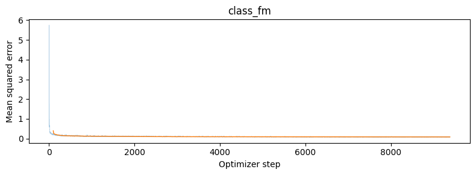
Four samples of each digit 0–9 (left to right), same seed across checkpoints, guidance scale γ=5.0, 300 Euler steps:
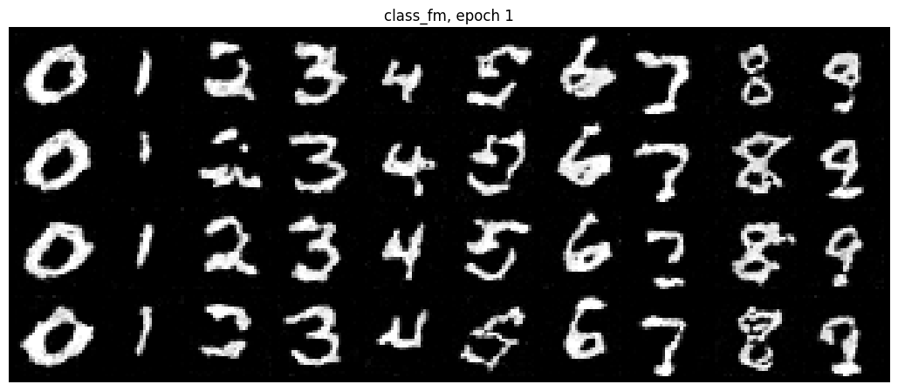
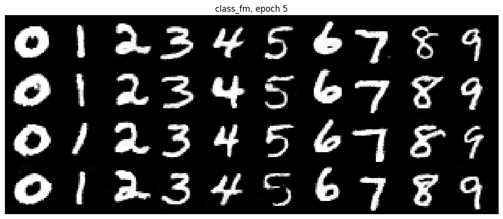
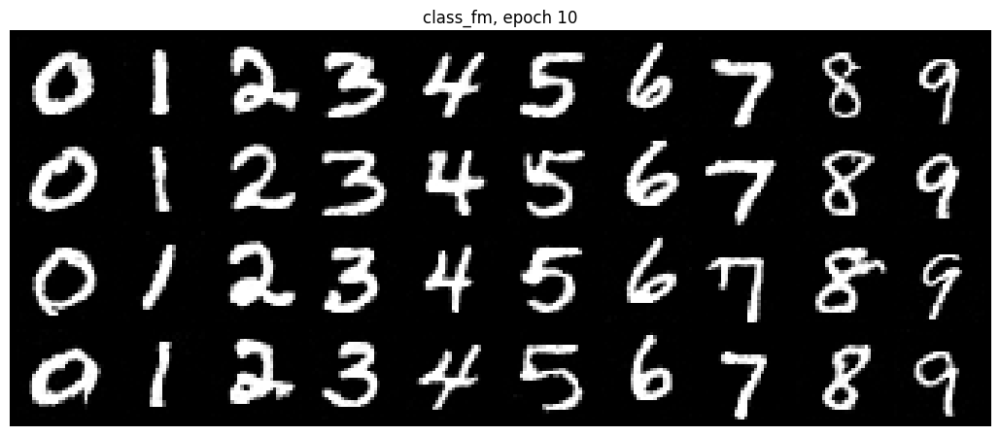
CFG makes the class label stick immediately, every column is already the right digit at epoch 1, unlike the unconditional model in 2.3 which needed all 10 epochs to get consistently legible. What improves with more training here is stroke quality: epoch 1's 8s and 2s are a bit wobbly, while epoch 10's digits are crisp and closer to real handwriting.
Removing the Scheduler
Same architecture, same 10 epochs, but a constant learning rate instead of
ExponentialLR. Dropping the decay schedule outright with the original 1e-2
learning rate made training visibly less stable (loss spikes late in training instead of
smoothly flattening), so I compensated by lowering the constant rate to 1e-3,
roughly where the scheduled run's decayed rate ends up by the final epochs.
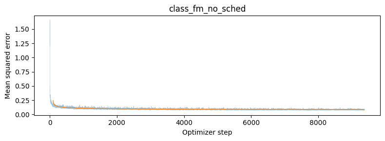
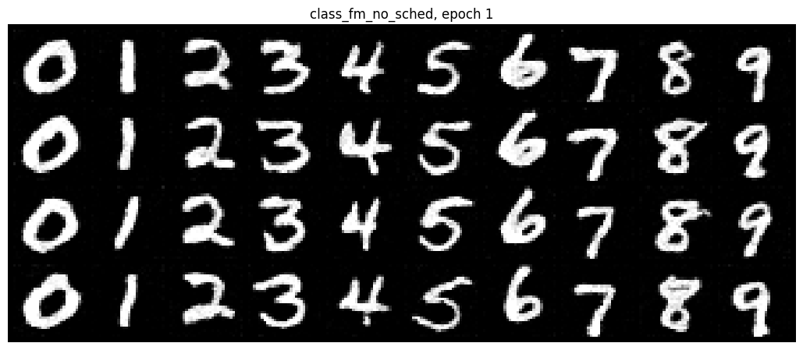
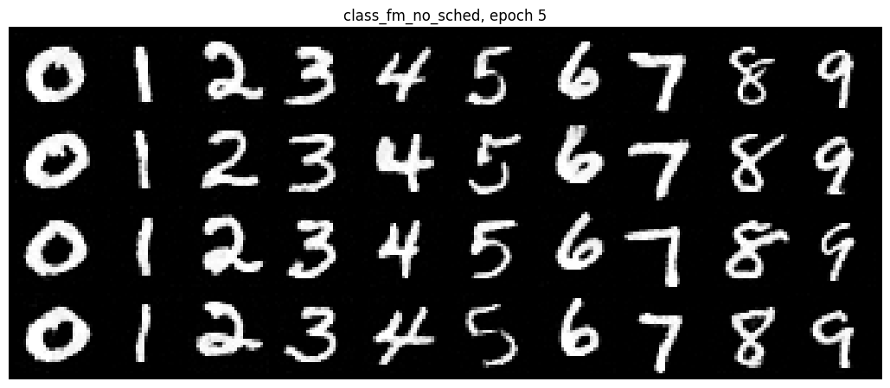
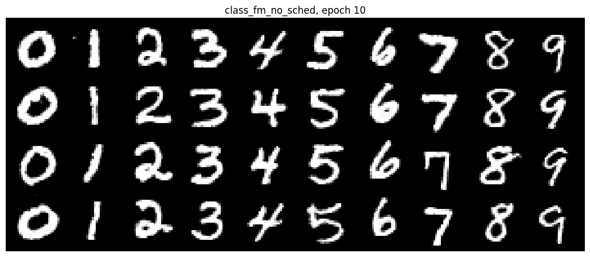
The loss curve is a touch noisier throughout (no decay to damp the step-to-step variance late in training), but the final samples at epoch 10 are essentially as clean as the scheduled run. A low constant learning rate recovers most of what the scheduler was buying, the scheduler mainly helps the early epochs settle faster, which matters less once you train for a fixed 10 epochs either way.